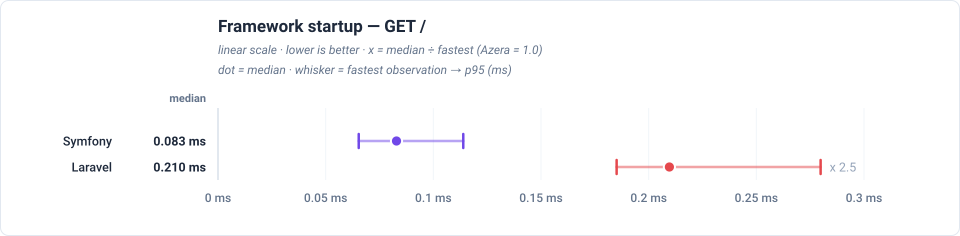
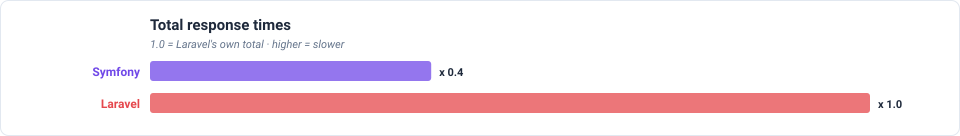
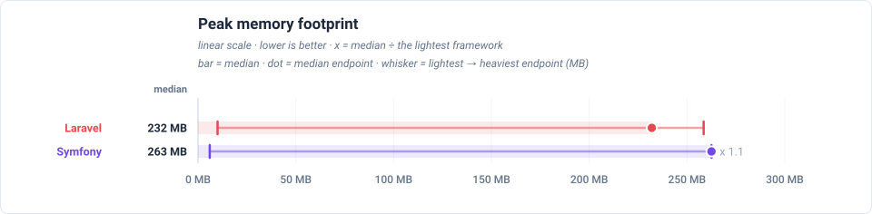
Feature benchmarks
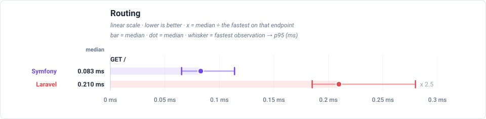
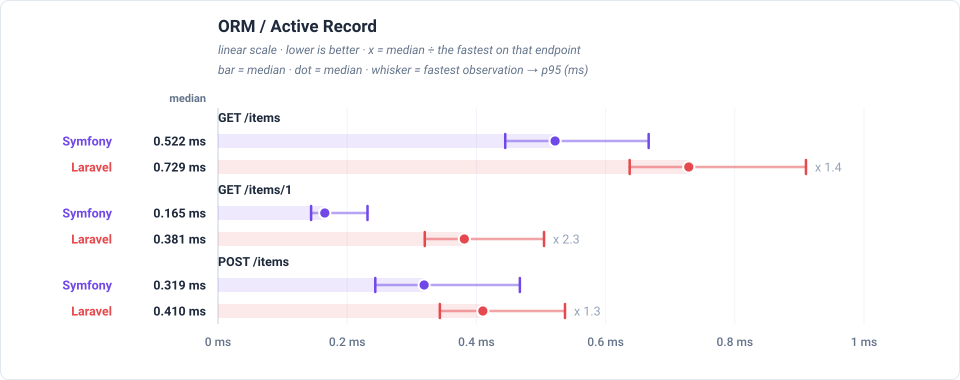
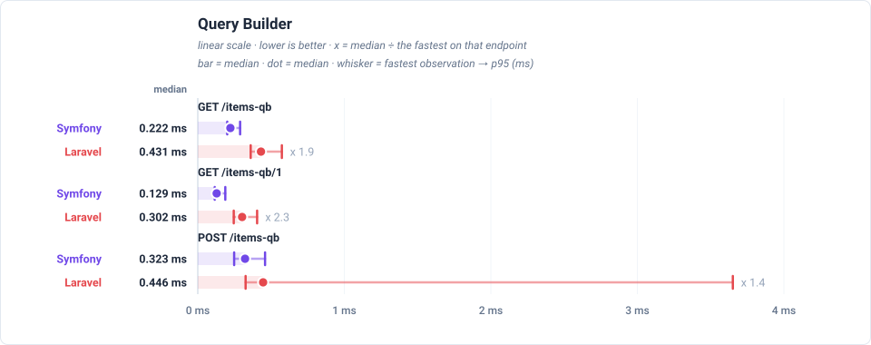
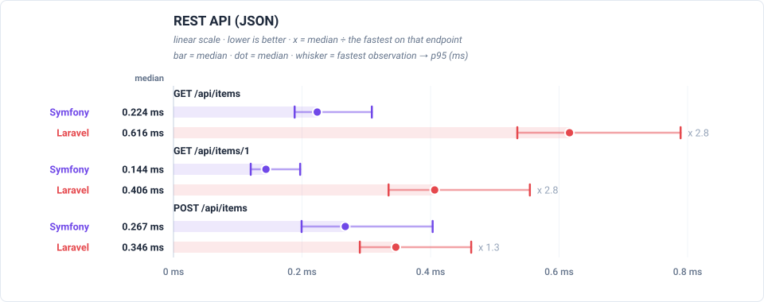
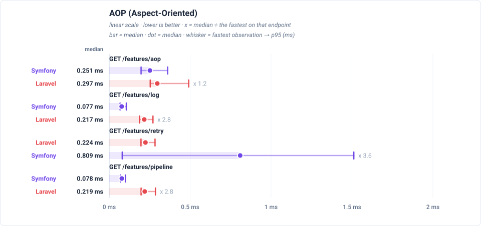
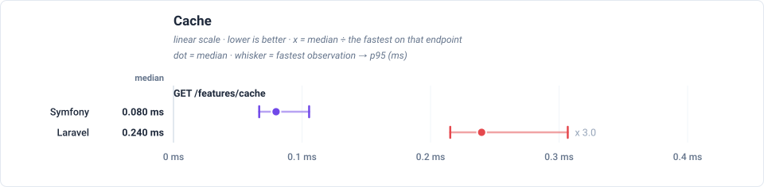
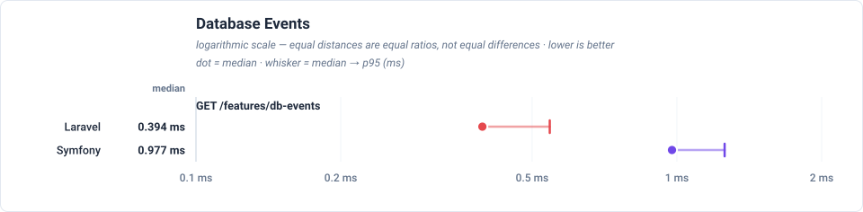
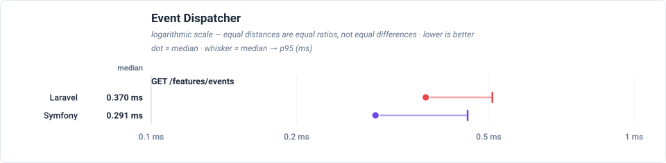
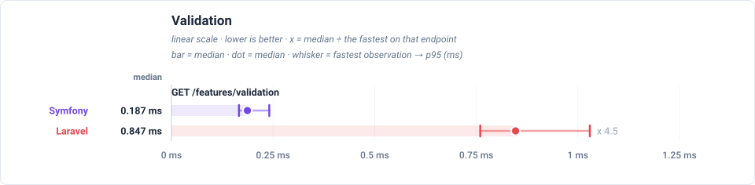
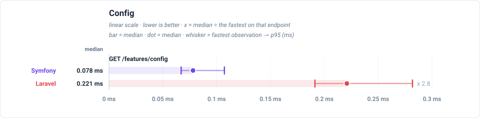
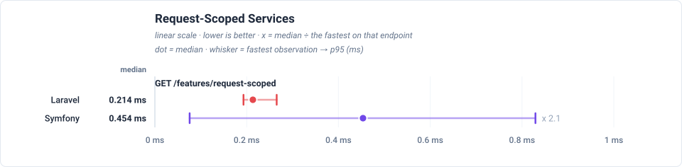
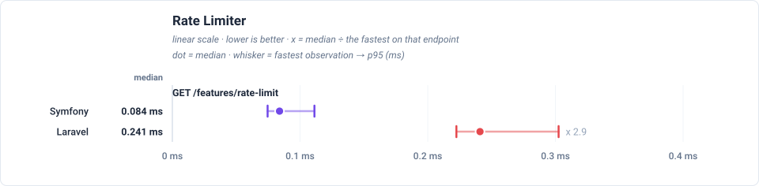
Latency by endpoint (ms, trimmed mean — lower is better) (sub-line: handle + post-response cleanup, which sum to the total)
| Request | Workload | Laravel | Symfony |
|---|---|---|---|
GET / | no DB — routing + template only | 0.217 0.216+0.000 | 0.089 0.087+0.002 |
GET /items | 20 of 1000 items (page 1, + COUNT) | 0.751 0.750+0.000 | 0.539 0.536+0.003 |
GET /items/1 | 1 item by id | 0.396 0.395+0.000 | 0.176 0.173+0.002 |
POST /items | 1 row upserted (sentinel #999999) | 0.425 0.425+0.000 | 0.336 0.333+0.003 |
GET /items-qb | 20 of 1000 items (page 1, + COUNT) | 0.440 0.439+0.000 | 0.237 0.235+0.002 |
GET /items-qb/1 | 1 item by id | 0.312 0.312+0.000 | 0.144 0.142+0.002 |
POST /items-qb | 1 row upserted (sentinel #999997) | 0.412 0.412+0.000 | 0.340 0.337+0.003 |
GET /api/items | 20 of 1000 items as JSON | 0.636 0.635+0.000 | 0.235 0.233+0.002 |
GET /api/items/1 | 1 item by id as JSON | 0.424 0.423+0.000 | 0.154 0.152+0.002 |
POST /api/items | 1 row upserted (sentinel #999998) | 0.359 0.359+0.000 | 0.289 0.286+0.003 |
GET /features/aop | no DB — interceptor pipeline | 0.343 0.343+0.000 | 0.053 0.052+0.000 |
GET /features/cache | no DB — cache round-trips | 0.250 0.250+0.000 | 0.052 0.052+0.000 |
GET /features/log | no DB — buffered log handlers | 0.224 0.223+0.000 | 0.052 0.052+0.000 |
GET /features/retry | no DB — retry policy | 0.236 0.235+0.000 | 0.052 0.052+0.000 |
GET /features/pipeline | no DB — middleware pipeline | 0.229 0.229+0.000 | 0.053 0.053+0.000 |
GET /features/db-events | 1 event row INSERTed per request | 0.414 0.414+0.000 | 0.053 0.052+0.000 |
GET /features/events | no DB — in-process listeners | 0.314 0.313+0.000 | 0.052 0.052+0.000 |
GET /features/validation | no DB — validator run | 0.883 0.883+0.000 | 0.053 0.052+0.000 |
GET /features/config | no DB — config lookup | 0.232 0.232+0.000 | 0.052 0.052+0.000 |
GET /features/request-scoped | no DB — scoped service resolve | 0.227 0.226+0.000 | 0.053 0.053+0.000 |
GET /features/rate-limit | no DB — cache-backed limiter | 0.256 0.256+0.000 | 0.053 0.052+0.000 |